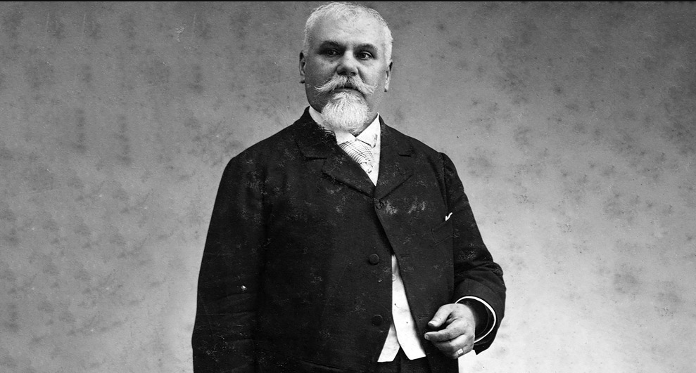

Introducción
Este tema introduce al estudiantado en el asombro como origen del filosofar y presenta la filosofía
no como un conjunto de doctrinas, sino como una práctica viva: cuestionar lo cotidiano, problematizar
certezas y adoptar una perspectiva humanista que valora la dignidad, la autonomía y el cuidado de lo común.
Se busca reconocer que todos podemos filosofar desde nuestras experiencias diarias. En el contexto del MCCEMS 2025,
filosofar se entiende como una herramienta de liberación personal y colectiva, capaz de confrontar desafíos como la
desigualdad extrema, la crisis climática, la violencia estructural y el impacto de la inteligencia artificial en la vida
cotidiana, siempre desde una ética del cuidado y la justicia social.
El asombro como punto de partida filosófico
La filosofía nace del asombro ante lo que parece obvio: ¿por qué existe algo en lugar de nada? ¿por qué el
mundo es como es? Este asombro impulsa preguntas profundas y nos invita a no aceptar lo dado sin reflexión.
En la vida cotidiana actual, el asombro puede surgir al observar desigualdades que se normalizan (¿por qué aceptamos
como natural que unas pocas personas acumulen riqueza equivalente a la de millones?), al enfrentar la inteligencia
artificial que imita emociones humanas (¿qué nos hace humanos si una máquina puede "sentir" mejor que nosotros?), o al
ver la destrucción ambiental acelerada (¿por qué seguimos priorizando el corto plazo sobre la supervivencia de generaciones
futuras?).
- La filosofía surge del asombro ante lo cotidiano y lo obvio, rompiendo la inercia de lo "naturalizado".
- Diferencia clave: opinión vs. pensamiento riguroso y argumentado (la opinión se acepta sin examen; el pensamiento
filosófico exige razones, evidencias y apertura a la crítica).
- El asombro impulsa a cuestionar lo dado y a no aceptar certezas sin examen, convirtiéndose en motor de autonomía
intelectual y transformación social.
- Ejemplos contemporáneos: asombro ante algoritmos que polarizan opiniones, ante deepfakes que distorsionan la
realidad, o ante la normalización de la precariedad laboral en la gig economy.
hombre en laberinto cerebral con bombilla → simboliza el "eureka" del asombro filosófico
Figura 2: Retrato de Leopoldo Zea pensativo → representa el humanismo latinoamericano crítico y plural
La perspectiva humanista en el MCCEMS 2025
El humanismo mexicano enfatiza el pensamiento para lo común: dignidad humana, derechos,
justicia social y transformación. Filosofar desde esta perspectiva significa analizar desafíos
actuales (desigualdad, violencia, tecnología) con empatía y compromiso ético. Esta tradición remite
a figuras como Justo Sierra (educador positivista que impulsó la educación laica y accesible como vía
de progreso y dignidad) y Leopoldo Zea (quien defendió un humanismo concreto y plural, centrado en la
identidad latinoamericana, la integración regional y la crítica al eurocentrismo, reivindicando la humanidad
plena de todos los pueblos).
Dato importante
La meta del semestre I es desarrollar la capacidad de formular preguntas filosóficas y participar en diálogos
argumentativos desde una visión humanista. En 2025-2026, esto implica confrontar dilemas como la regulación
ética de la IA, la justicia climática intergeneracional y la defensa de derechos indígenas frente al extractivismo,
siempre priorizando la dignidad humana y el cuidado de lo común.
Desarrollo del Tema
El pensamiento filosófico se distingue de la opinión cotidiana porque busca rigor, claridad y
argumentación. No es memorizar respuestas, sino practicar el cuestionamiento cuidadoso y creativo.
¿Qué es filosofar?
Folosofar implica problematizar la realidad, dudar de lo asumido y construir pensamiento propio.
Ejemplos de esto son: cuestionar normas sociales o el uso de redes sociales en la vida diaria.
Perspectiva humanista y dignidad
El humanismo valora al ser humano como fin en sí mismo. En México, se vincula con tradiciones como
el humanismo renacentista, la Escuela de Salamanca (defensa de la dignidad indígena en el siglo XVI),
Justo Sierra (educación como herramienta de emancipación) y pensadores contemporáneos como Leopoldo Zea
(quien propuso un humanismo de la autenticidad latinoamericana, crítico del imperialismo y defensor de la
integración solidaria). Hoy, este humanismo se enfrenta a desafíos como la deshumanización digital, la precarización
laboral y la crisis ecológica, exigiendo un filosofar comprometido con la justicia social y ambiental.
Ejemplos Visuales
Ejemplo 1: Hombre en laberinto cerebral con bombilla → simboliza el "eureka" del asombro filosófico
Ejemplo 2: Justo Sierra en retrato formal → simboliza la educación como vía de dignidad y emancipación

Ejemplo 3: Justo Sierra en retrato formal → simboliza la educación como vía de dignidad y emancipación
Conclusión
Este tema sienta las bases para entender la filosofía como herramienta de liberación y transformación
personal y social. Al filosofar, ampliamos nuestra visión del mundo y nos preparamos para enfrentar dilemas
éticos con mayor conciencia.